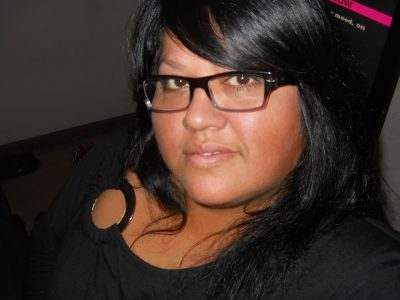

Our Excellent Leadership!
Our volunteer leadership is wonderful. This leadership team helps run the church smoothly while promoting individual growth as well as overall growth in the church organization. There is a Board of Directors as well as Ministry Team leaders.
My name is Frank Millington. In my role as the Treasurer on the church Board of Directors, I am responsible for monthly and annual record keeping of all contributions made to MCC Phoenix as well as taking care of the financial responsibilities of the church. I have over 20 years experience working in the financial industry. I feel that God has lead me to this position to help with the growth of our church and reaching out to our community to show God’s love for all of us! My goal being a board member of MCC Phoenix is to help with the rebuilding of our congregation by MCC Phoenix getting back out into the community and letting the LGBT community know that we are still here.

I am Rachel Esquivez. Since arriving in Phoenix in 2012 I have looked for a place to worship an receive the word of God while building a family. I found that at MCC Phoenix. In so doing, as the Clerk of MCC Phoenix I will serve with diligence and work to accomplish our message of “Transforming ourselves as we transform the World.
My name is Vanessa Williams, I’ve been a member of Metropolitan Community Church and a member of the Board of Directors off and on for pass 15 years. I LOVE God, this Church and my Church family. At this time I serve on the Board as Vice Moderator. I also work with the following teams; Worship and Service. Again I love this church and am always available to speak with anyone. A little something personal- my Partner is Arlene Speight, we’re been together for 8 years. My favorite color is green and I love elephants. 🙂
Hi I am Jay Wilkinson Deacon of the Church for the past two and a half years. I do really appreciate all the wonderful support I get and all the love that is here. I love praying for all of the people who come in to the Church. I’m also part of the prayer angels and the Congregational care ministries. I do the Altar Guild and Membership class. I also help with the Worship team. I am just letting God help us to Grow.